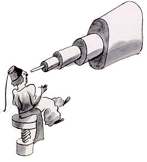
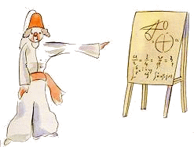
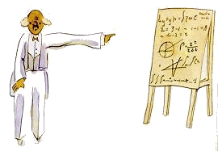

小王子 The Little Prince
第4章
第4章
我由此知道了另一件很重要的事情：他居住的星球比一座房子大不了多少！
这并没让我感到很吃惊。我知道，除了像地球、木星、火星、金星这些取了名字的大星球，还有成千上万的星球，它们有时候非常非常小，用望远镜都不大看得见。天文学家找到其中的一个星球，给它编一个号码就算名字了。比如说，他把它叫作“3251号小行星”。
 我有很可靠的理由，足以相信小王子原先住的那个星球，就是B612号小行星。这颗小行星只在一九〇九年被人用望远镜望见过一次，那人是一个土耳其天文学家。
当时，他在一次国际天文学大会上作了长篇论证。可是就为了他的服装的缘故，谁也不信他的话。大人哪，就是这样。
幸好，有一个土耳其独裁者下令，全国百姓都要穿欧洲的服装，违令者处死，这一下B612号小行星的名声总算保全了。那个天文学家在一九〇二年重新作报告，穿着一套非常体面的西装。这一回所有的人都同意了他的观点。这一回所有的人都同意了他的观点。
我之所以要跟你们一五一十地介绍B612号小行星，还把它的编号也讲得明明白白，完全是为了大人。那些大人就喜欢数字。你跟他们讲起一个新朋友，他们总爱问些无关紧要的问题。他们不会问你：“他说话的声音是怎样的？他喜欢玩哪些游戏？他是不是收集蝴蝶标本？”他们问的是：“他几岁？有几个兄弟？他有多重？他父亲挣多少钱？”这样问过以后，他们就以为了解他了。你要是对大人说：“我看见一幢漂亮的房子，红砖墙，窗前种着天竺葵，屋顶上停着鸽子……”他们想象不出这幢房子是怎样的。你得这么跟他们说：“我看见一幢十万法郎的房子。”他们马上会大声嚷嚷：“多漂亮的房子！”
所以，如果你对他们说：“小王子是存在的，证据就是他那么可爱，他格格地笑，他还想要一只绵羊。一个人想要有只绵羊，这就是他存在的证据嘛”，他们会耸耸肩膀，只当你还是个孩子！可要是你对他们说：“他来自B612号小行星”，他们就会深信不疑，不再问这问那地烦你了。他们就是这样。不必怪他们。孩子应该对大人多多原谅才是。
不过，当然，我们懂得生活，我们才不把数字放在眼里呢！我真愿意像讲童话那样来开始讲这个故事。我真想这样说：
“从前呀，有一个小王子，住在一个跟他身体差不多大的星球上，他想有个朋友……”对那些懂得生活的人来说，这样听上去会真实得多。
我不想人家轻率地来读我这本书。我讲述这段往事时，心情是很难过的。我的朋友带着他的绵羊已经离去六年了。我之所以在这儿细细地描述他，就是为了不要忘记他。忘记朋友是件令人伤心的事情。并不是人人都有过一个朋友的。再说，我早晚也会变得像那些只关心数字的大人一样的。也正是为了这个缘故，我买了一盒颜料和一些铅笔。到了我这年纪再重握画笔，是挺费劲的，况且当初我只画过剖开和没剖开的蟒蛇，还是六岁那年！当然，我一定要尽力把它们画得像一些。但做不做得到，我可说不准。有时这一张还行，那一张就不大像了。比如说，身材我就有点记不准确了。这一张里小王子画得太高了。那一张呢太矮了。衣服的颜色也挺让我犯难。我只好信手拿起色笔这儿试一下，那儿试一下。到头来，有些最要紧的细部，说不定都弄错了。不过这一切，大家都得原谅我才是。我的朋友从来不跟我解释什么。他大概以为我是跟他一样的。可是，很遗憾，我已经瞧不见箱子里面的绵羊了。我也许已经有点像那些大人了。我一定是老了。